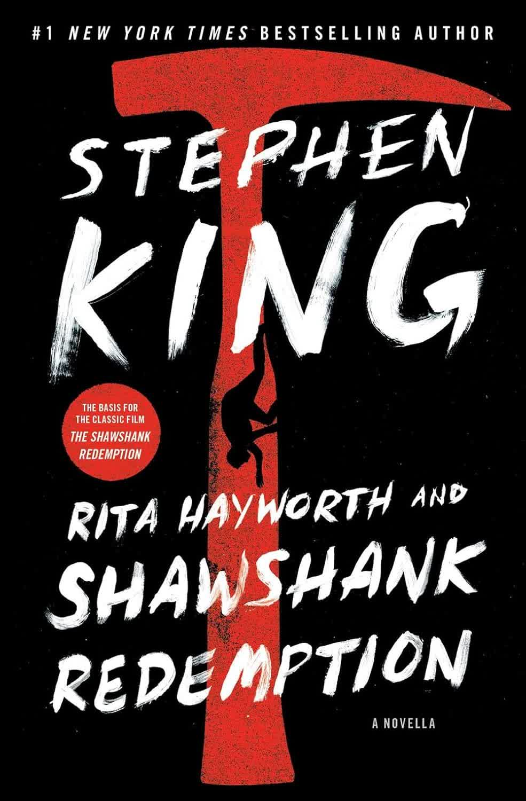

Rita Hayworth and Shawshank Redemption by Stephen King

This masterpiece is the first story in Stephen King's "Different Seasons" book. Personally, I absolutely loved it and read it in one sitting. It's about 100 pages, so it will take only a couple of hours to finish. Or 4, if you are a slow-reader like me.
The story revolves around a banker named Andy Dufresne, who gets convicted of a double-murder of his wife and her lover. Though he denies the accusations, he is condemned to a life sentence in Shawshank prison. The first few years don't go as well for him as the latter ones, and he's being beat up by "the sisters".
The story is told from Red's perspective, who is also a prisoner at Shawshank. He is very handy and has a good reputation of someone who can get you almost anything, except for things that may kill people, for a small percentage. As I said, Andy was in an "ordinary" position for a new prisoner, but a few years in, something interesting happens: he confronts Shawshank's warden after hearing about some inheritance talks. And as Andy was a banker, he knows exactly how to legally avoid taxes, and offers his help to the warden for a couple of bottles of beer for the group. The warden may have just killed Andy for his clear ignorance, but he decides to get the help from him and even gets them their beer.
After this incident Andy becomes the warden's tax advisor and investment banker, helping them manage their income. The story from here only gets more and more interesting.
Also, I don't want to spoil the Rita Hayworth part, so you'll see it for yourself.
The ending was also brilliant. I even cried a little.
This is my second Stephen King book, and I must say that this story, the first story in the book, was amazing. Looking forward to reading the next three stories.
Just another masterpiece from Mr. King .